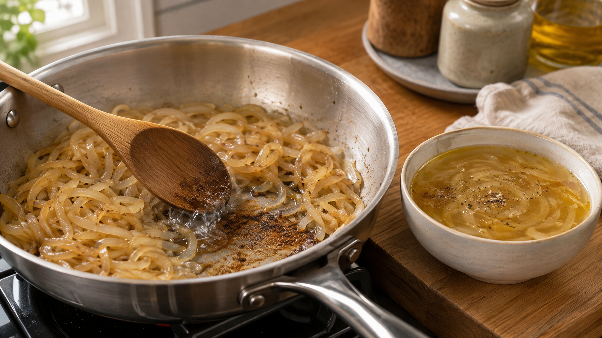

玉ねぎは火力で、甘さと香ばしさを分ける。褐色になる二つの道
玉ねぎを炒めているのに、いつまでも白い。
火を強くすると、今度は端だけ黒くなる。
「弱火でじっくり」が正しいのか、「強火で焼く」が正しいのか。実は、欲しい味によって答えが変わる。
玉ねぎの甘さを感じやすくする工程と、香ばしい褐色を作る工程は、同じフライパンの中で続いている。ただし、主役になる変化が違う。
今日の結論
甘く、やわらかな玉ねぎにしたいなら、最初は弱めの中火で水分を出す。
香ばしさまで欲しいなら、水分が減ってから中火に上げ、鍋底へ薄い褐色が付くまで炒める。
最初から最後まで強火にする必要はない。前半は中まで火を通し、後半は乾いた表面を焼く。 この二段階に分けると、焦げる前に甘さと香ばしさを重ねやすい。
玉ねぎは、加熱すると砂糖が増えるわけではない
生の玉ねぎには、もともとブドウ糖、果糖、ショ糖などが含まれている。
加熱すると甘くなるため、「熱で糖が新しく作られる」と思いやすい。ところが、加熱した玉ねぎの甘い香りを調べた研究では、これらの糖は増えず、減るか、ほぼ変わらなかった。
甘く感じる大きな理由は、水が蒸発して残った糖が濃くなることだ。さらに、組織がやわらかくなって糖を感じやすくなり、生玉ねぎの刺激的な硫黄の香りが弱まる。
甘い音だけを聞きたいのに、隣で大きな刺激音が鳴っている状態を想像してほしい。加熱は刺激音を小さくし、もともとあった甘さを前へ出す。
だから、甘さを引き出す最初の仕事は、焦げ目を急ぐことではない。玉ねぎの中まで熱を通し、水分をゆっくり逃がすことだ。
水分が多い間、フライパンはまだ「煮る」に近い
切った玉ねぎの大部分は水だ。
フライパンへ入れた直後は、表面から出た水が熱を受け取る。水分が多い間は、玉ねぎの温度が急に上がりにくく、組織がやわらかくなる変化が先に進む。
この段階で少量の塩を加え、弱めの中火で混ぜると、玉ねぎ全体がしんなりする。透明感が出ても、まだ濃い褐色にはならない。
やがて湯気が減り、フライパンから「ジュワジュワ」という水っぽい音より、「パチパチ」という乾いた音が聞こえ始める。ここが、火力を少し上げる合図だ。
褐色は、二つの反応が重なってできる
水分が減って表面温度が上がると、玉ねぎは褐色になり、香りが変わる。
ひとつは、糖とアミノ酸が出会って、焼いたパンや肉にも似た香ばしい成分を作る変化だ。これをメイラード反応という。
もうひとつは、糖そのものが熱で分解され、甘く焦げた香りや色へ変わる道だ。これをカラメル化という。
実際の炒め玉ねぎでは、この二つをきれいに分けることはできない。玉ねぎには糖もアミノ酸もあり、油の変化や硫黄成分の変化も同時に起きるからだ。見た目が茶色だからといって、すべてをカラメル化だけで説明するのは正確ではない。
玉ねぎの加熱褐変を調べた研究では、温度が高いほど褐色化が進み、特に100℃を超えると反応が速くなった。加熱中には糖とアミノ酸が減り、糖の分解と、糖とアミノ酸の反応の両方が関わる結果が示されている。
ここから家庭料理へ導けるのは、「強火ほど甘い」ではない。水分が残る前半では強火の熱が端へ集中しやすく、水分が減った後半では中火でも褐色反応が進みやすい、ということだ。
香ばしくなるほど、甘さだけの味ではなくなる
長く炒めた玉ねぎを調べた日本の研究では、水分が減るにつれて刺激臭が消え、甘く香ばしい香りへ変わった。
一方で、褐色が濃くなるまで炒めると、糖の量はむしろ減った。感じる甘さと、測った糖の量も単純には一致しなかった。
これは大事な結果だ。
茶色い玉ねぎのおいしさは、「砂糖が増えた味」だけではない。刺激が弱くなること、甘い香りが生まれること、香ばしさが加わること、少量の酸味や苦味が輪郭を作ること。その合計で、味が深く感じられる。
異なる炒め方の玉ねぎの香りを調べた研究でも、高い温度と長い加熱を組み合わせた玉ねぎほど、香りの成分が多く、メイラード反応に由来すると考えられる香ばしい香りが強かった。
ただし、濃い茶色を越えて黒くなると、苦味と焦げ臭が前へ出る。狙うのは黒さではなく、明るい茶色からあめ色の範囲だ。
今日の一皿：二段火力のオニオンスープ
材料（2人分）
- 玉ねぎ 300g
- オリーブ油 10g
- 塩 3g
- 水 450mL
- 黒こしょう 少々
作り方
- 玉ねぎは繊維に沿って5mm幅に切る。厚みをそろえると、端だけ焦げにくい。
- 24cmほどのフライパンへオリーブ油、玉ねぎ、塩1gを入れる。弱めの中火にかけ、ふたをして5分蒸し焼きにする。2分ほどたったら一度混ぜる。
- ふたを外し、弱めの中火のまま8〜10分炒める。玉ねぎがやわらかくなり、湯気が減るまで待つ。
- 音が乾いてきたら中火に上げ、5〜8分炒める。鍋底へ薄い褐色が付いたら、水大さじ1を加えて木べらではがし、玉ねぎへ戻す。この操作を必要に応じて繰り返す。
- 玉ねぎ全体が明るいあめ色になったら水450mLを加える。沸いたら弱火にし、5分煮る。
- 残りの塩で味を整え、黒こしょうを振る。
鍋底の褐色は香りの材料になる。黒くなる前に水で溶かして戻すと、焦げを増やさず、香ばしさをスープへ移せる。
この考え方を、肉やきのこにも広げる
二段火力で覚えたいのは、「弱火か強火か」を一つに決めないことだ。
水分が多い食材は、まず中まで火を通し、水を減らす。表面が乾いてから火力を上げると、焼き色を狙いやすい。この順番は、きのこ、ひき肉、野菜炒めにも応用できる。
買い物では「甘い玉ねぎなら早くあめ色になる」とは限らない。品種や保存状態で糖と水分が違うため、時計よりも湯気と音を見る。水っぽい音が乾いた音へ変わったら、褐色を作る後半へ入った合図だ。
今日のまとめ
玉ねぎの甘さは、加熱で砂糖が増えるからではない。
水分が減り、刺激臭が弱まり、やわらかくなることで、もともとの甘さを感じやすくなる。さらに表面が乾くと、メイラード反応とカラメル化を含む褐色反応が進み、香ばしさが加わる。
次に玉ねぎを炒めるときは、時計だけを見ない。湯気が減り、音が乾いた瞬間に火力を切り替えよう。
参考文献
- Tokitomo Y, Yamanishi T. Sweet Flavor of Cooked Onion. 日本家政学会誌. 1993;44:347-353. https://doi.org/10.11428/jhej1987.44.347
- 溝井雅子, 澤山茂, 川端晶子, 本間清一. 玉葱の加熱による褐変. 日本栄養・食糧学会誌. 1992;45(5):441-447. https://doi.org/10.4327/jsnfs.45.441
- 玉木雅子, 鵜飼光子. 長時間炒めたタマネギの味, 香り, 遊離糖, 色の変化. 日本家政学会誌. 2003;54(1):69-76. https://doi.org/10.11428/jhej1987.54.69
- Villière A, Le Roy S, Fillonneau C, et al. Evaluation of aroma profile differences between sué, sautéed, and pan-fried onions using an innovative olfactometric approach. Flavour. 2015;4:24. https://doi.org/10.1186/s13411-015-0034-0